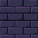
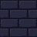
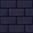
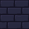
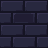
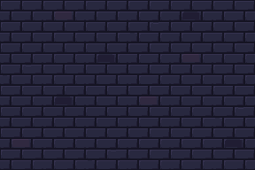
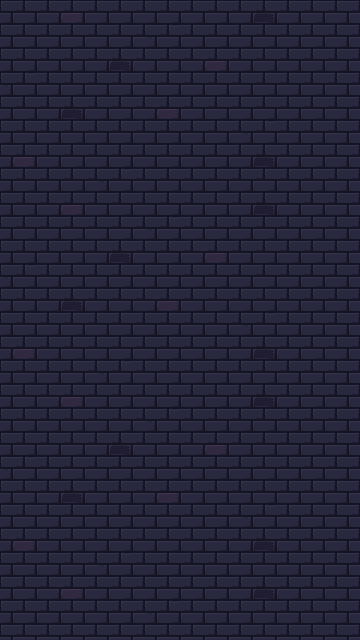
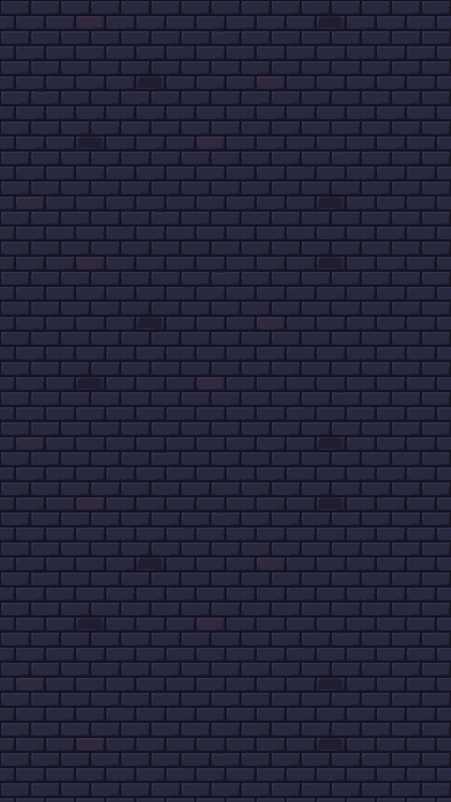

Raw is 64×64. Finished repeats are 48×48, assembled from the generated native brick clusters with repaired joins. No image resizing or interpolation. This changes the repeat canvas, not the source pixel pitch.

Raw PixelLab · 64×64 · 4 colors

A · Quiet base · 48×48

B · Subtle violet stone · 48×48

C · Restrained bevel wear · 48×48

D · Deeper stone · 48×48
Family palette: #151423 #201D33 #28283F #35324F #302940 #413451. Opaque wall: alpha 255 only. No torch glows, props, portrait recess, floor or frames baked in.
Alternating 6×4 repeat field
All 16 ordered variant pairings match on both axes. Variants are distinct native edits, not shifted duplicates. The controls above apply here too.

Actual Unity Game View
Wall-only preview at realistic native scale. All 112 sprites fit fully in the field. Imported source → actual screen comparison: zero differing RGBA pixels at 1× and 3×. The live battle's older scaling issue remains outside this stage.

360×640 capture · exact 1× · complete sprites
1080×1920 capture · exact 3×

Native edge and corner closures
Exact partial modules continue the same masonry. They add no decorative border or new architectural family. Two extra 16-pixel-high pieces close the preview's bottom boundary without clipping.
Native images verified against current registered production hashes. Rattlebones was the actual PixelLab style-image input for pixel clusters, contours and shading only. Farmer and Pan were reviewed locally. Reference subjects and palettes were not copied into the wall.
skeleton-stillfarmer-stillpan_villager-still
Stage 01 complete. Artwork awaits your review. Stage 02 has not started.